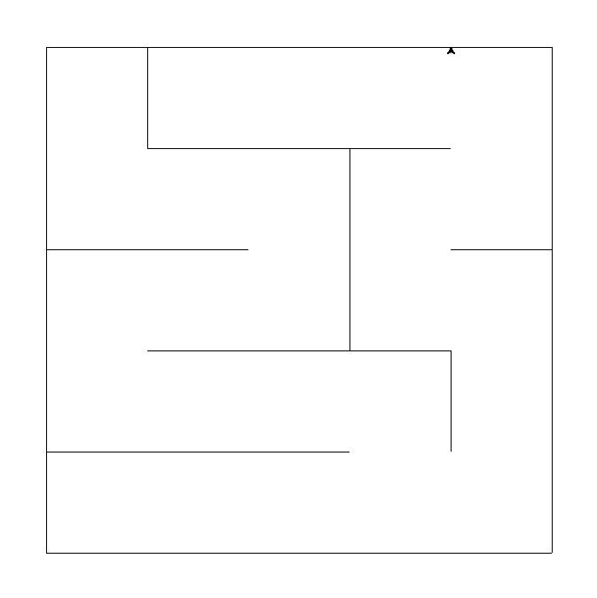
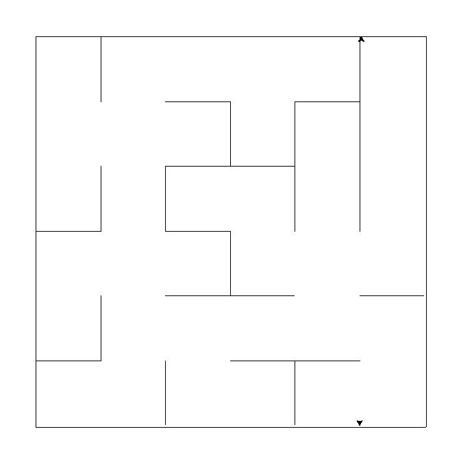
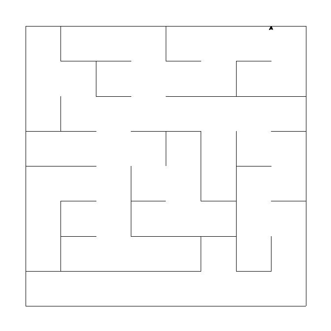

Results:
Fastest: {{ fastest }}
Least impasses: {{ least_impasses }}
Iterative DFS algorithm maze

- Maze type: {{ dfs_type}}
- Charasteristics: lots of long corridors, easy to solve
- Method: passage carving
- Maze execution time: {{ dfs_execution_time }} ms
- Impasses: {{dfs_impasses}} pcs
Kruskal's algorithm

- Maze type: {{ kruskal_type }}
- Charasteristics: regular patterns, lots of impasses, easy to solve
- Method: passage carving, a minimal spanning tree
- Maze execution time: {{ kruskal_execution_time }} ms
- Impasses: {{kruskal_impasses}} pcs
Aldous-Broder algorithm

- Maze type: {{ aldous_broder_type }}
- Charasteristics: long, winding paths
- Method: uniform spanning tree, passage carving
- Maze execution time: {{ aldous_broder_execution_time }} ms
- Impasses: {{aldous_broder_impasses}} pcs